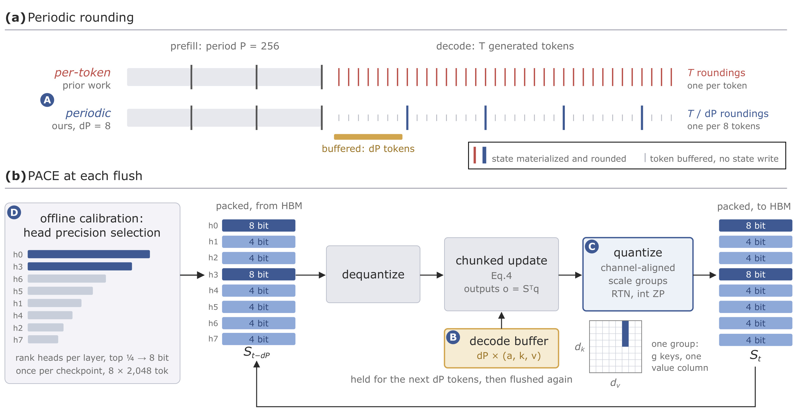
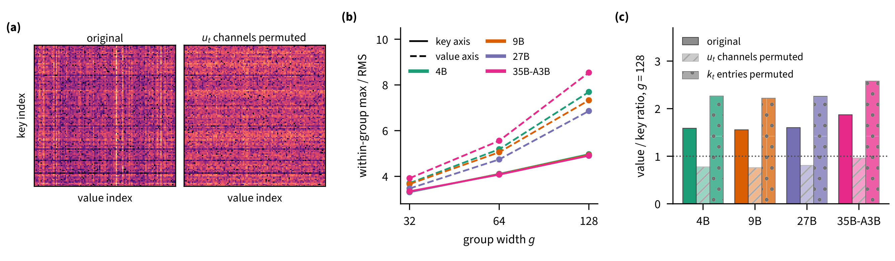
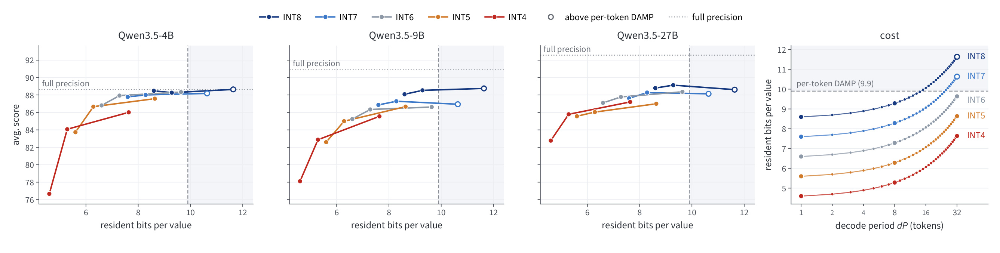
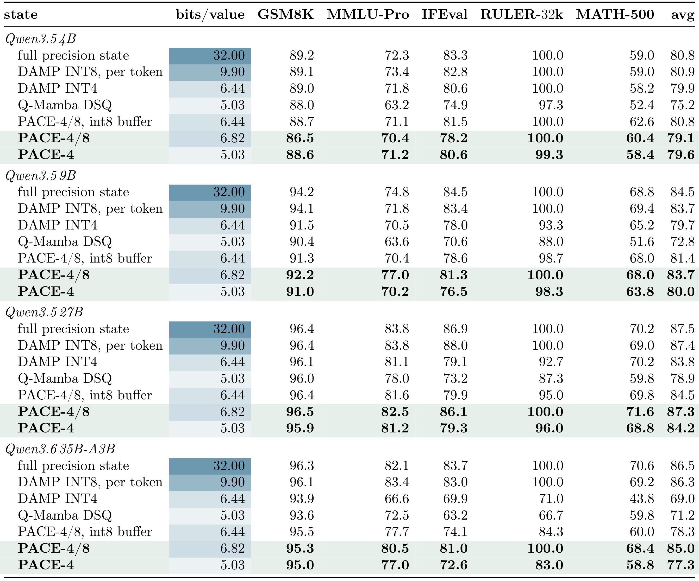
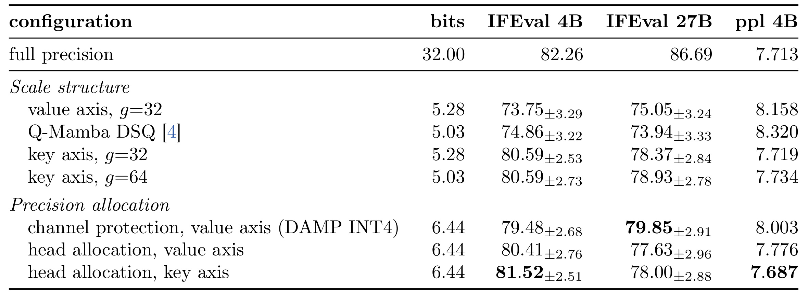
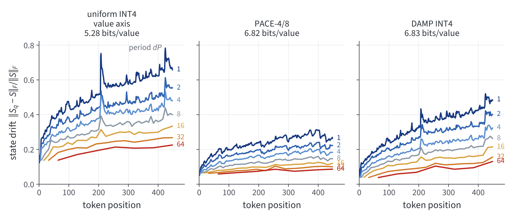
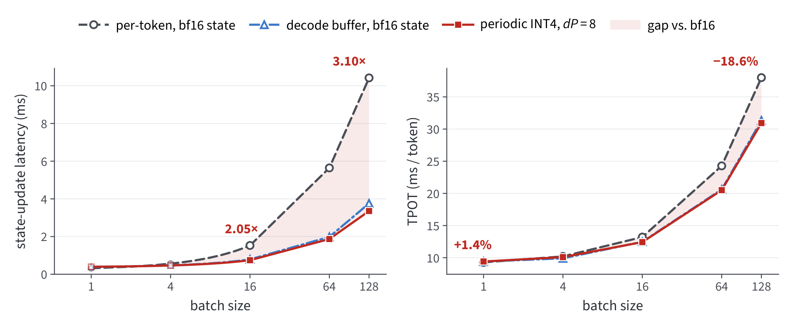
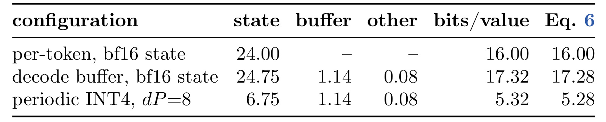
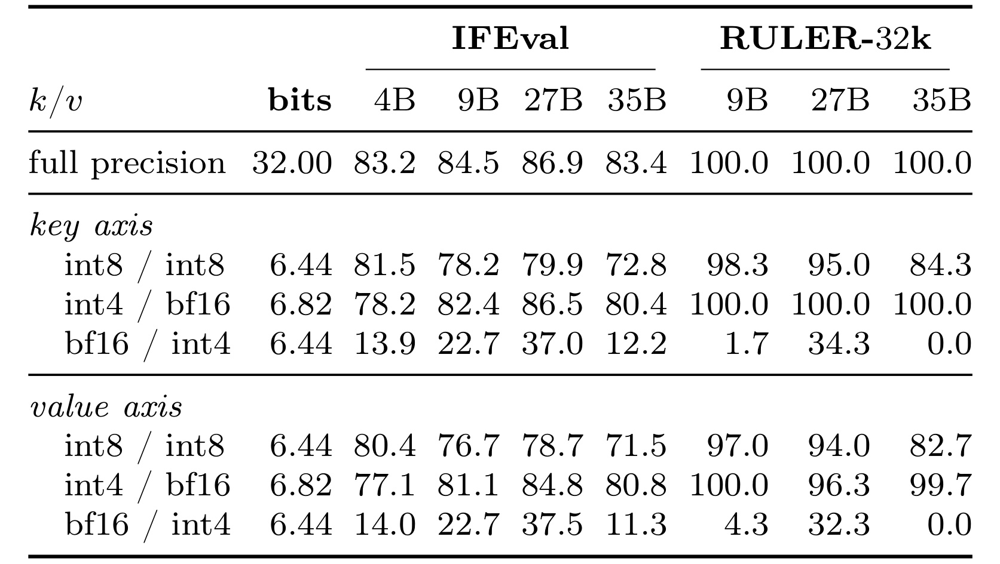

PACE：以周期舍入和通道对齐压缩门控 Delta 模型的循环状态
PACE 研究的是线性注意力模型解码时反复读写的循环状态。它把“每次生成一个 token 就量化一次”改成“先保留短缓冲，再隔几个 token 量化一次”，并结合状态的列结构与按头混合精度，在不训练模型权重的前提下改善精度与常驻内存的折中。
- 论文： PACE: Periodic and Channel-Aligned Encoding of Four-Bit Recurrent States
- 作者：Patrick Haller、Filipe Laitenberger、Alan Akbik；机构：柏林洪堡大学。
- 首次公开：2026-10-21 10:31 UTC，即北京时间 2026-10-21 18:31；PDF 首页标注日期为 2026-10-22，两者口径不同。
- 阅读日期：2026-10-23。来源为 arXiv 摘要与 17 页原始 PDF；实验数字均为作者报告，本笔记未复现实验。
- 代码/项目：原文未提供可独立核验的代码或项目入口。
现有状态量化器在每个生成 token 后都进行舍入，而四比特量化会损失准确率，除非提高位宽或微调模型。
1. 背景和问题
线性注意力用一个大小固定的状态矩阵记录历史上下文，每个解码序列、每个循环层、每个头都需要各自的状态。固定大小解决了状态随上下文持续增长的问题，却不等于高并发服务没有状态内存压力。作者在引言中统计，六十四条并发序列时，单精度状态占“权重加状态”总内存约百分之十到百分之四十一。这是特定模型与并发条件下的比例，不能当作所有大模型服务的显存组成。不过它解释了为什么在权重之外继续压缩状态有意义：当更多请求同时驻留时，状态开销会随序列数线性增加，而模型权重由这些请求共享。
与传统注意力的键值缓存相比，循环状态有一个特别容易忽略的差别。键值缓存中的一条历史记录通常写入后只被读取，量化误差不会因为未来每一步再次写入这条记录而反复注入。循环状态则不同：新输入会与过去的压缩状态共同产生下一个状态，下个状态又被量化、存储、读取。旧误差沿递推传下去，新误差又在每步加入。因而只讨论一次四比特舍入的重构误差，会遗漏“量化了多少次”这个时间维度。PACE 的起点正是把量化的频率提升为与位宽、分组方式并列的设计变量。
更具体地说，论文关注门控 Delta 规则，其状态的行对应键维度，列对应值通道。对每个头，普通线性注意力可以写成下面的状态更新与读出关系：
符号解释：$S_t$ 是键维度乘值维度的状态矩阵，$k_t$ 与 $q_t$ 是键与查询，$v_t$ 与 $o_t$ 是值与输出，$t$ 表示 token 位置。这个公式解释了固定状态如何承接历史：每个 token 写入一个外积，查询再从累计矩阵中取出结果。实际模型还通过门控和纠错控制记忆，但矩阵反复写回的特点相同。因此量化影响的不仅是当下输出，也影响未来看到的历史表征；对于依赖长上下文变量的任务，这种误差可能在答案生成前就已经影响了记忆。
作者选择的四个骨干都交错使用门控 Delta 层和完整注意力层，包括 Qwen3.5 的三个规模，以及 Qwen3.6-35B-A3B。这意味着论文的压缩对象是混合模型里的循环状态，而非所有层的全部缓存，更不是权重与激活的完整四比特化。完整注意力层的缓存仍然存在，其他算子也仍然占时间。读论文时要始终保留这个边界，否则“每状态值约五到七比特”的结果很容易被转述成“整台设备显存压到原来的几分之一”，而论文并没有给出这样的结论。
既有工作已经从多个方向处理状态量化。DAMP 用误差与衰减持久性评估危险通道，并给这些通道更高精度；Q-Mamba 用两个轴上的缩放向量，并在原方法中微调部分权重；另一些方法把状态保留在八比特或更高精度。PACE 与它们的关系不是否认空间维度上的优化，而是补上时间维度：即使使用相同的四比特量化器，减少状态舍入次数，也可能大幅减轻累积误差。论文对 Q-Mamba 的基线是作者重实现的免微调 DSQ 部分，因此不能把比较结果扩大成击败含微调的完整 Q-Mamba 方案。
预填充阶段其实已经在利用较低频的状态写回。分块计算一次处理数十至上千个 token，中间状态不逐个落到显存，只有块的起点与终点被物化，所以块尾才有量化机会。解码通常一次只处理一个新 token，每步都写回，于是天然变成每步舍入。PACE 观察到这两个阶段的差异并非算法不可改变的约束。既然已有服务工作会保存短期键值缓冲，以减少状态读写，就可以同时把这段缓冲当作推迟舍入的条件。这样，状态量化与服务内核不是两个孤立优化，而是通过写回边界联系起来。
推迟写回需要付出内存成本。最近的键、值和衰减系数必须保留，缓冲越长，量化次数越少，但常驻数据越多。因此不能只说周期从一增大到三十二后准确率更高，还必须问新增缓冲是否把状态压缩省下的内存又吃掉了。论文明确采用“状态载荷、量化元数据与解码缓冲合计后，再除以状态元素数”的口径，用驻留比特数比较不同配置。这个选择让周期成为一个受约束的折中问题，而非单纯把周期无限加大就能解决的优化。
论文还提出第二个观察：状态中的大元素并非随机分布，它们经常聚在值通道对应的列上。如果沿值轴把不同量级的列放进同一量化组，大列会决定步长，小列有效利用的刻度就很少；如果沿键轴在同一列里分组，尺度更一致。第三个观察来自误差保留时间：不同头的衰减不同，相同的单次误差可能在某些头里持续更久。因而 PACE 的完整回答由三个层面组成：减少误差注入次数、降低每次注入的误差、把较高精度留给更难忘掉误差的头。它们各自对应后文的周期实验、结构置换与精度消融。
最后还应区分论文声称的创新与已有基础。分块内核、解码缓冲、按持久性分配精度都有相关先例，本文并未声称从零发明这些部件。其新贡献在于系统研究八比特以下的舍入周期，发现并验证门控状态的大值列结构，再将这些观察组合成无需训练的编码方案。这样组织问题的好处是每项设计都有可检查的动机，而不是仅提供一个最后得分较高的量化配方。对读者来说，最有迁移价值的部分也不是某个固定组宽，而是先检查状态尾部结构、误差遗忘时间与实际写回边界，再确定精度应该花在哪里。
这也决定了评判论文的顺序。应先问固定量化器是否因周期变化而改善，再问轴向统计是否能预测分组收益，最后看完整方案是否在包含缓冲的预算下仍有竞争力。只有这三层证据都成立，才能把结果归于时间与空间联合设计。如果只看摘要里的“约三分之二内存”，就会错过小模型退化和混合精度带来的额外成本，无法判断自己的目标任务是否适合采用。
2. 方法
2.1 周期舍入与解码缓冲
门控 Delta 规则先对旧状态衰减，并消除沿当前键方向的部分响应，再把新值写入。论文采用的更新为：
符号解释：$a_t$ 是零与一之间的衰减，$\beta_t$ 是写入强度，$I$ 为单位矩阵；单位长度的键 $k_t$ 决定校正方向。把这一式展开后，可以用一个“Delta 值”表示本步真正写入的新内容：
符号解释：$u_t$ 是本步写入的 Delta 值；它不是原始值向量，而是新值减去衰减状态已经能返回的部分，再乘写入强度。这个区别后面非常重要：形成列结构的是更新中实际写入的通道，不能只看原始值激活的统计。对长度为一个块的序列，定义块内累积衰减，就能把块末状态表示为起点状态与块内各次外积的加权和：
符号解释：$C$ 是块长，$S_0$ 为起点状态，$\alpha_i$ 是块内前 $i$ 步衰减的乘积。块内 Delta 值通过三角求解获得，所以这不意味着可以在不知道依赖关系的情况下独立计算所有更新。分块内核用密集运算处理依赖，只把起点和终点状态物化。PACE 在解码中也保存最近若干 token 的输入，以同样的边界降低状态写回与舍入次数；当前 token 的输出仍然要按时计算，不能理解成等凑满一整个缓冲才向用户返回这些 token。

Figure 2 上半部分横轴是生成过程，竖线表示真正物化并量化状态的时刻。以前每个 token 对应一条竖线，周期为八时只在八个 token 的边界写回，其他 token 的输入进入黄色缓冲。预填充部分仍然按块尾舍入，图中用二百五十六作为固定预填充块长。这张图把减少舍入次数的来源交代得很清楚：并不是把每次舍入换成更昂贵的优化器，而是改变状态何时落地，从源头减少量化误差被加入递推的次数。解码缓冲本身来自已有服务思想，PACE 把它与低位宽状态编码结合起来。
下半部分从左到右是高带宽显存中的打包状态、反量化、利用缓冲进行分块更新、按列对齐分组重新量化、再写回显存。左下角独立的校准支路给每层的头排序，最危险的四分之一保留八比特，其余使用四比特；因此图里的深蓝头不能被省略成“所有头都是四比特”。缓冲框中保存的是衰减、键和值，而不是一份未压缩的大状态矩阵。最后的量化框明确显示一组包含同一列里的若干键坐标，强调分组方向。读这套系统时应把离线校准与在线更新分开：校准选择精度，在线路径根据既定选择执行读写，两者都不要求训练权重。
从误差角度看，单位长度键使每步误差传播矩阵的范数不超过衰减系数。若用某个头的平均衰减近似，并假设连续舍入注入的误差相互独立，论文给出累计保留能量的上界：
符号解释：这里单次注入的能量为 e，头编号为 h，解码周期为 d，下标 P 与论文记号保持一致。平均衰减越接近一，分母越小，误差越难遗忘；周期越大，两次舍入之间经过的衰减越多，累计上界越低。这个式子给的是简化条件下的解释与排序依据，不能把每次动态门控都替换成一个均值后宣称得到了完整任务准确率的严格预测。特别是量化误差与输入相关、后续层继续非线性处理时，状态误差与任务得分之间仍需实验连接。
常驻成本需要同步计算。缓冲每个 token 保存一份键、值和衰减，键头可以被多个值头共享。论文把每状态值随周期增加的缓冲开销写成：
符号解释：$d_k$ 与 $d_v$ 分别是键和值维度，$\gamma$ 是共享一个键头的值头数量，$b_k$ 与 $b_v$ 是缓冲键和值的位宽，常数三十二对应衰减存储；$B_{\mathrm{state}}$ 是含尺度和零点的状态成本。第二个等式是依据论文成本定义整理出的总账表达。均匀量化配置的键值缓冲均使用八比特；混合头版本则使用四比特键与脑浮点十六位值。周期、缓冲精度和状态精度必须联动比较，不能拿仅含状态载荷的数字与另一种含完整缓冲的数字直接比较。
2.2 沿键轴分组与整数零点
量化尺度一般由组内最大幅度决定。四比特只有少量离散刻度，组内混入一个特别大的元素，就会让其他小元素面对很粗的步长。PACE 因此先研究大元素沿哪个轴聚集，再决定分组方向。状态矩阵的一列对应一个 Delta 值通道；沿键轴的分组在同一列中取连续元素，沿值轴的分组则跨过多个列。两者都能保持相同组大小与元数据数量，所以可以在接近相同成本下检验布局是否真的重要。

Figure 3 左侧热图把同一个头原始状态的绝对值放到共享对数色标下，与逐 token 随机打乱 Delta 值通道后的状态比较。原始热图有清晰的竖直亮列，置换后亮列消失；这说明问题不只是某个 token 的值特别大，而是某些值通道在很多 token 上保持大幅度，沿同一列长期积累。中间折线横轴是组宽，纵轴是组内最大绝对值与均方根之比，实线代表沿键轴、虚线代表沿值轴。四种模型里虚线都更高，而且组变大时差异扩大，所以跨列组里典型元素获得的有效刻度更少。
右侧柱图把两种轴的统计做成比值，并对比原始、打乱 Delta 值通道、打乱键坐标三个条件。原始比值大于一，打乱值通道后降至一以下，打乱键坐标反而进一步扩大。附录的数值显示，四种模型原始比率约为一点五六到一点八七，值通道置换后约为零点七六到零点九六。这个干预比单看热图更能支持作者的解释，因为它保留了单步幅度分布，却破坏跨 token 的通道身份。不过置换并非保持模型功能不变的等价变换，结论应限于状态结构来源，不能说置换实验直接证明了下游准确率的必然变化。附录还提醒，整块状态的对数幅度方差分解会得出不同的轴排序；对量化而言决定步长的是尾部大值，因此需要匹配问题的统计量。
均匀 PACE-4 采用沿键轴、组宽六十四的对称量化，尺度用半精度存储，每状态值成本是四比特加上分摊尺度。混合版本组宽三十二，采用仿射网格，零点也需要存储。如果零点直接保留浮点数，已经衰减到零的元素可能在每次舍入时被映到非零位置，反复产生人为残留。PACE 把零点吸附到载荷网格并存成整数代码，从而让真实零能够精确表示。四比特组计入尺度与零点后是四点六二五比特，八比特组是八点七五比特。这里的低位宽指存储编码，计算仍然经历反量化与较高精度更新。
2.3 按头精度分配
空间分组减少单次舍入噪声后，仍有一些头由于衰减缓慢而长期保留噪声。PACE 对每个头测量一次舍入注入的误差能量，再根据前面的保留能量式排序，每层最高的四分之一使用八比特。这延续 DAMP 的误差乘持久性思路，却把保护单位从头内部的部分键通道改成整个头。校准每个检查点只做一次，用八段各两千零四十八 token 的留出窗口，不需要梯度更新，也没有重新训练模型权重。它依赖少量校准样本的代表性，因此“免训练”不等于完全没有数据相关选择。
符号解释：$B_{\mathrm{mixed\ state}}$ 是混合头状态的平均每元素比特数，零点与尺度已经包括在两个组成本里，四分之三与四分之一是层内头数量比例。加上默认八 token 混合精度缓冲后，主结果表报告六点八二比特；换成键值都是八比特的缓冲时约为六点四四比特。PACE-4/8 的有效成本高于纯四比特，同时仍然低于 DAMP INT8 的九点九比特参考。推理阶段根据离线选好的头精度读取打包状态，周期边界执行更新与编码。论文没有引入新的训练损失，因而这里需要比较的是校准、状态布局、内核与缓冲策略，而不是额外训练轮次带来的收益。
3. 实验结果
3.1 解码周期与准确率
实验覆盖四种混合模型，均使用聊天模板、贪心解码并关闭思考模式。数学任务 GSM8K 与 MATH-500 用精确匹配，IFEval 用提示级严格准确率，RULER 用三万两千七百六十八 token 的变量追踪准确率，MMLU-Pro 每个学科抽四十题，共五百六十题。所有生成任务为零样本。GSM8K 与 MATH-500 最多生成一千零二十四 token，MMLU-Pro 上限八千一百九十二；这些限制会影响误差传播链路的长度与任务难度，不能只凭模型名假设评测设置与别的榜单相同。

Figure 4 前三个面板分别是四十亿、九十亿和二百七十亿参数骨干。横轴是含缓冲的每状态值驻留比特，纵轴是三个任务得分的平均数；每条折线固定量化位宽，只让解码周期从一变为八、再变为三十二。作者刻意采用已有的沿值轴、组三十二均匀量化器，避免把沿键轴布局和混合头收益一起算给周期。红色四比特曲线从逐 token 舍入到八步舍入上升最明显，其他低于八比特的曲线也同向改善。以附录九十亿模型的数字为例，四比特三任务均值从七十八点一到八十二点九，再到八十五点六；这与下一张主结果表五任务平均分属于不同口径，不能混用。
最右面板说明收益的代价。周期越长，缓冲线性增长，四比特配置的驻留成本也从四点六零变为五点二八、再变为七点六四比特。周期八只使用周期三十二四分之一的缓冲长度，却已拿到大部分周期收益，所以作者把八选为默认；这是一种经验折中，而非对所有硬件都成立的最优值。图中的水平或竖直参考线表示全精度与 DAMP INT8 的九点九比特成本，超过该成本的区域被标出来。还有反例需要保留：八比特曲线并非周期越大越好，二百七十亿模型从八到三十二的平均分略降。更长周期降低状态误差上界，不代表每个任务得分都单调增加。
较大模型在所有周期下仍有与全精度的差距，尤其是 IFEval 与长上下文追踪。作者观察到 RULER 的部分差距在三个解码周期中相近，推测这部分误差可能形成于预填充，因为预填充周期始终固定为二百五十六。这里是基于实验模式的推断，而非完整因果归因。若要验证，需要独立改变预填充块长与精度，分别跟踪预填充结束时的状态误差和后续解码。仅继续增加解码缓冲，并不能保证恢复预填充已经丢掉的信息。
3.2 四种模型的主结果

Table 1 的每一大块对应一个模型，每行对应一个状态量化配置。左侧驻留比特已经计入状态载荷、尺度等元数据与相应缓冲；中间五列是两类数学、知识问答、指令遵循和长上下文变量追踪，最右列为五项不加权均值。全精度行是三十二比特状态，DAMP INT8 行按其已发表配置列出九点九比特。PACE-4/8 默认六点八二比特，约为九点九的百分之六十九；PACE-4 为五点零三比特，约为百分之五十一。这里比较的是每状态值常驻成本，绝不是模型权重、完整注意力缓存、工作空间与整卡所有内存都同比下降。
九十亿模型的 PACE-4/8 与 DAMP INT8 五任务均值都是八十三点七，但分项不同：前者 MMLU-Pro 七十七点零高于后者七十一点八，IFEval 八十一点三低于八十三点四，GSM8K 九十二点二低于九十四点一。二百七十亿模型均值八十七点三与八十七点四接近，IFEval 八十六点一仍低于八十八点零；三百五十亿稀疏模型均值八十五点零低于八十六点三。由此可以支持“较大模型上用更低状态成本取得接近的平均表现”，但不能写成所有任务无损，或者所有规模都与八比特等价。不同能力的得失会被均值抵消，服务选择必须看最重要的任务列。
四十亿模型是必须单独说明的失败边界。默认混合缓冲版本的均值七十九点一低于 DAMP INT8 的八十点九，也低于同方法八比特键值缓冲的八十点八；换成混合缓冲多占一点内存却更差，说明较大模型上有效的缓冲精度组合不能机械迁移。另一方面，PACE-4 与同成本 Q-Mamba DSQ 在四个模型的均值分别是七十九点六对七十五点二、八十点零对七十二点八、八十四点二对七十八点九、七十七点三对七十一点二，方向一致。不过 DSQ 在这里没有执行原方法微调，比较的是免训练实现下的状态量化选择，而非完整训练方案排名。
主表另一个有用对照是六点四四比特的 PACE-4/8 八比特缓冲版本，与相同成本 DAMP INT4 比较。四个模型均值都更高，尤其稀疏模型从六十九点零到七十八点三；换成默认混合缓冲又提高到八十五点零。这个结果显示周期、分组和缓冲保护确实存在组合效应，但主表同时改变多个要素，单独每项贡献仍应看消融。论文声明主表、消融与附录各自来自独立评测运行，拥有自己的全精度行。因此不能把不同表里的小数差异都归因于某项设计，也不宜用跨表差值构造作者未做过的配对显著性结论。
3.3 分组与精度分配消融

Table 2 固定解码周期为八并采用八比特键值缓冲，上半块改变尺度结构，下半块改变精度保护方式。四十亿与二百七十亿的 IFEval 都是越大越好，四十亿的 WikiText-103 困惑度越小越好。作者对与全精度状态的配对差异计算百分之九十五区间，表中带正负号的区间不能简单理解为所有不同行之间的独立显著性检验。上半块相同五点二八比特成本下，沿值轴组三十二的四十亿 IFEval 为七十三点七五，换成沿键轴后三十二区间配置达到八十点五九；二百七十亿从七十五点零五变为七十八点三七。困惑度从八点一五八降到七点七一九，接近全精度七点七一三，支持分组方向确实减少重构噪声。
组宽六十四进一步降低元数据占用到五点零三比特，四十亿 IFEval 仍为八十点五九，困惑度为七点七三四。这说明本文场景中沿键轴的结构收益足以抵消一定程度的组变大，不过不能推断任意大组都不损失准确率。与相同五点零三比特的 DSQ 比，沿键轴困惑度更低，IFEval 也更高，表明简单的一维布局有时比同时缩放两个轴更符合循环状态的尾部分布。作者用图三的干预分析解释这件事，但消融仍然只覆盖两个模型及少数指标，结论外推需要新的模型族证据。
下半块同为六点四四比特时，保护整头、沿键轴的四十亿 IFEval 八十一点五二，高于 DAMP 通道保护的七十九点四八，困惑度七点六八七也低于八点零零三；然而二百七十亿 IFEval 七十八点零零低于通道保护的七十九点八五。甚至从沿值轴的按头保护换成沿键轴，二百七十亿也只从七十七点六三到七十八点零零，远没有上半块那么大的提升。因此更准确的结论是：按头保护改善了困惑度与部分指令指标，增益受模型和指标影响，不能把“精度预算分配更合理”写成每个任务都胜过通道保护。保留这个反例，才能解释为何主表需要同时报告多任务而非只选一个漂亮指标。
3.4 状态漂移

Figure 5 用四十亿模型在 WikiText-103 测试集前五百一十二个 token 上，逐位置比较量化状态与全精度状态。横轴是 token 位置，纵轴为两个状态差的弗罗贝尼乌斯范数除以全精度状态范数，并对循环层取中位数。左、中、右分别是均匀沿值轴四比特、PACE-4/8 的状态量化器、DAMP INT4；每条曲线代表不同舍入周期。三个面板内部都能看到周期越长，漂移越低，支持“减少重复注入误差”的解释；PACE 面板总体更低，也与通道布局和头保护的动机一致。附录三百五十亿模型的复核图呈现同样的周期排序。
但这组图的控制条件与主表不同：作者在整个测试片段上按所设周期舍入，研究的是状态本身随时间的误差，不是保持预填充固定、只改变解码的完整任务评测。三个面板驻留比特也不完全相同，左边约五点二八，中间六点八二，右边六点八三，不能直接将所有面板高度差视作相同预算下的纯周期效应。曲线会受到具体输入影响，部分位置有突跳；较长后趋于较稳定的范围，与衰减系统不断清除旧误差、不断加入新误差的图像相容。归一化状态距离只是机制指标，不保证同样大小的误差对不同方向的查询有相同影响，因此最终仍要以长上下文和指令任务验证，而不能仅用最低漂移挑配置。
3.5 速度及实际内存

Figure 6 在 H100 PCIe 单卡、四十亿模型、五百一十二 token 上下文条件下测量，横轴是批大小。左图纵轴是循环状态更新延迟，右图是每输出一个 token 的模型总时间。灰色虚线是逐 token 写回的脑浮点十六位状态，蓝线是带解码缓冲但状态仍用十六位，红线是八步舍入的周期四比特状态。批量增大时，灰线明显变慢；到批量一百二十八，周期四比特状态更新比逐步十六位快约三点一倍。可是蓝线与红线彼此很接近，说明大部分速度收益来自解码缓冲减少状态读写，四比特编码的主要作用是保留这份收益，同时压缩常驻状态。
右图把这个区别变得更明确。批量一百二十八时，红线对应总输出时间降低百分之十八点六，而不是整个模型快了三点一倍；批量为一时还比逐步十六位略慢百分之一点四。模型里权重计算、完整注意力层及其他部分不会因为循环状态内核加速而消失，所以不能把内核倍数直接当作用户看到的响应倍数。论文使用 CUDA 图，每个配置取十五个计时块的中位数，状态更新耗时通过完整模型时间减去用常量替代循环算子的模型时间获得。这个差分口径有助于聚焦算子成本，但也提醒读者它不是简单的单算子独立计时。结果支持在该硬件与批量区间中，周期量化没有破坏缓冲的解码优势；更长上下文、多卡并行或真实请求长度分布仍然需要单独验证。批量十六以上的收益与低批量的小幅退化共同说明，该优化更偏向提高吞吐场景中的状态处理效率，交互式单请求不能直接继承最大批量下的收益。

Table 6 把同一吞吐实验的实际内存拆成状态、缓冲和其他三项，单位为每序列兆二进制字节，最后两列分别是实测折算每状态值比特与公式预测值。逐 token 十六位状态占二十四，带缓冲十六位状态本身二十四点七五、缓冲一点一四、其他零点零八；周期四比特的状态降到六点七五，缓冲与其他仍是同样一点一四和零点零八。只看六点七五会漏掉实际在线必须保留的辅助数据，因此作者把完整测量折算为五点三二比特，对应公式约五点二八。零点零四比特左右的差异主要说明实际实现还有衰减与内核暂存等小开销，理论驻留成本不是精确到字节的分配器快照。
这张表还能澄清“位宽”这个容易混淆的词。状态载荷四比特并不意味着每元素最终只付四比特，量化尺度、对齐布局、缓冲、衰减等都要加总；脑浮点十六位缓冲版本也因此达到约十七点三二比特，而非正好十六。这里实测的是吞吐内核所用的周期四比特配置，不能直接代替主结果中混合四与八比特头、混合键值缓冲的六点八二比特配置。论文不同实验根据目的选择不同状态编码，阅读时需要把图六的红线、表六的内存和表一的准确率分开追踪，不能拼成一个作者没有完整实测过的万能设置。如果服务最终目标是增加并发，还应测量权重、完整注意力缓存和峰值工作空间共同约束下能容纳多少请求；本文的每状态值成本已经比只报载荷更完整，但尚不是整卡容量规划结论。
3.6 缓冲精度反例

Table 5 上半块沿键轴分组，下半块沿值轴分组，行里的两个精度分别代表缓冲键与缓冲值，状态量化器固定为 PACE-4/8，周期八。IFEval 列覆盖四个模型，RULER 列覆盖三个较大模型，全部越高越好。最醒目的结果不是某个小数领先，而是把值压到四比特会整体崩塌。沿键轴、键保留十六位但值四比特时，九十亿 IFEval 只有二十二点七，RULER 仅一点七；稀疏三百五十亿模型 RULER 为零。反过来，键四比特而值十六位时，三个较大模型 RULER 都达到百分之一百，IFEval 也明显优于值四比特。因此默认混合缓冲选择保护值，有直接的消融支撑。
作者还指出一个反直觉之处。仅按外积形式看，键误差会同时影响寻址与写入，似乎应当比只影响写入的值误差更危险；实际内核却会在量化后对缓冲键重新做二范数归一化，键误差中的幅度部分被消除，主要留下方向偏差，值误差则直接进入更新。所以量化敏感性要结合内核真实处理流程分析，不能只凭代数中的乘法次数判断。另一方面，这个选择也存在模型反例：四十亿模型的混合缓冲 IFEval 七十八点二，低于八比特键值缓冲的八十一点五。即使值保护在较大模型恢复了长上下文追踪，也不表示它是所有规模的统一最优。表五与表一来自不同评测运行，个别任务数字不能逐小数强行对齐，应以各表自己的全精度和控制条件解释。这里同时改变了缓冲位宽与驻留成本，不能称为严格等预算比较；它回答的是哪一种张量更值得保护，而不是证明多花的每一比特在所有模型上都能兑现准确率收益。
4. 总结
PACE 最值得保留的认识，是把循环状态量化看作一个带时间反馈的编码问题。每步舍入会将新的离散误差加入递推；如果已经有解码缓冲，就可以利用同样的计算边界减少注入次数。再依据 Delta 值通道的长期幅度结构选择沿键轴分组，并按误差保留时间保护部分头，能够在无权重训练的条件下，把准确率与状态内存的折中推进到更好的位置。这个思路对关注线性注意力推理的研究者很直接，也给系统工程师一个明确提醒：量化算子的输入输出边界应与服务内核的物化边界一起设计。
具体采用时，应先区分两个产品取向。PACE-4 用全四比特头和八比特缓冲，成本更低，但在较大模型的指令能力上仍有明显损失；PACE-4/8 用四分之一八比特头与混合缓冲换取更接近八比特参考的表现，成本也更高。论文支持较大模型上接近 DAMP INT8 的平均表现，四十亿模型和多个 IFEval 分项则没有达到这一水平。方法的价值在于提供可选择的折中，而不是消除低位宽量化的所有代价。
目前的证据还存在至少四个限制。第一，骨干来自同一相关模型系列，虽然覆盖稠密与稀疏规模，尚不足以证明所有门控状态空间模型都具有相同列结构。第二，误差分析使用平均衰减与误差独立的近似，任务准确率并不由状态范数距离单独决定。第三，校准头排名只用少量留出窗口，语言、领域和生成分布变化后的稳定性没有被充分检验。第四，性能测量集中于一张特定 GPU、短上下文与指定批大小，没有覆盖多卡服务、动态批处理和混合请求生命周期。第五，DSQ 基线省去了原方法微调，结论应限定在本文免训练比较。第六，本轮没有核验到作者独立发布的可用代码入口，复现还需要核对内核、布局和评测细节。
后续最值得做的验证有三个方向。其一，在相同常驻预算下联合扫描预填充周期、解码周期与缓冲位宽，并把预填充末状态误差单独记录，确认长上下文损失究竟从哪个阶段出现。其二，检验头排名在不同领域校准集之间的相关性，对比固定四分之一比例与按层可变预算，观察能否改善四十亿模型及 IFEval 的反例。其三，在实际服务请求分布中同时记录可接入并发、首 token 延迟、逐 token 延迟、峰值内存和任务成功率，把状态级节省转换成真实服务能力，而不是只报告局部算子倍数。
如果只记住一个实践判断，应当是先确定误差如何产生与保留，再决定在哪个轴、哪个头、哪个时间边界花精度预算。PACE 的置换实验使沿键轴分组有了结构依据，周期实验使减少舍入有了隔离证据，吞吐图与内存表又把缓冲的收益和成本放回同一账本。与此同时，小模型退化、指令指标下降和值缓冲四比特崩塌都说明，这些选择必须在具体任务和内核条件下重新检验。本文给出了可操作的机制组合与边界，尚没有给出跨模型、跨硬件的默认最优配置。
对于准备复现的读者，保留每种配置的独立账本尤其必要：状态按哪个轴分组、每层哪些头升级、键和值各用多少位、预填充与解码各多久写回，以及最终成本包含哪些元数据，都应同时记录。否则实验里同样叫四比特的两行可能有不同缓存成本，而同样的驻留比特也可能对应不同误差来源。这样的对照表比只保存一个平均分更有助于判断下一次改动是否有效。